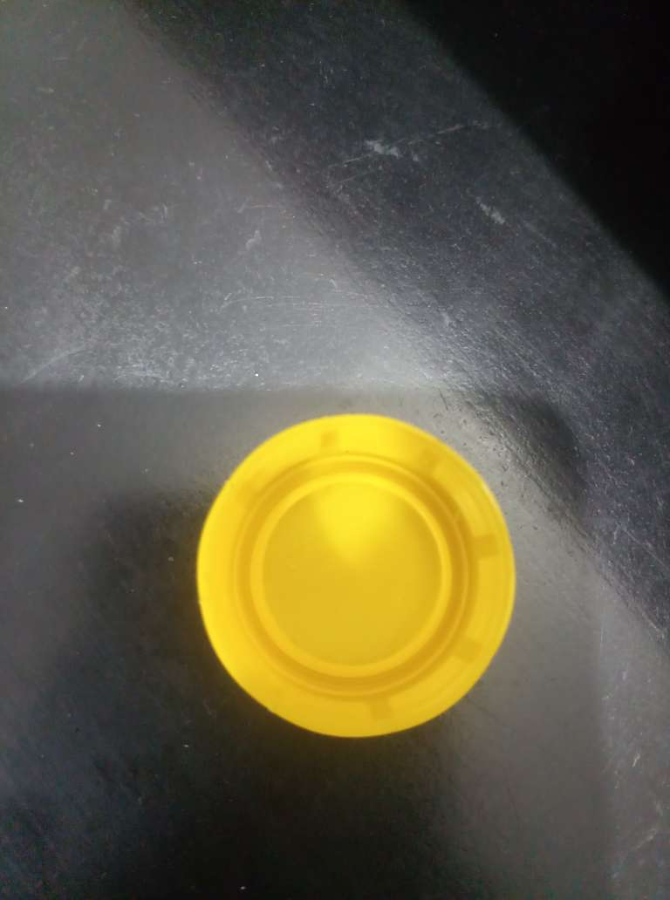

Description
This demo uses the Yolov3-Tiny model that is trained to detect caps and snacks Bellmark. It is not trained to recognize human faces. For best performance, upload images of object like bottle cap from inside view and snacks bellmark facing. You can toggle between these three models for bottle caps, snacks Bellmark and combined model,which detects both classes, through this button.
Status
Current Model
Model Output
